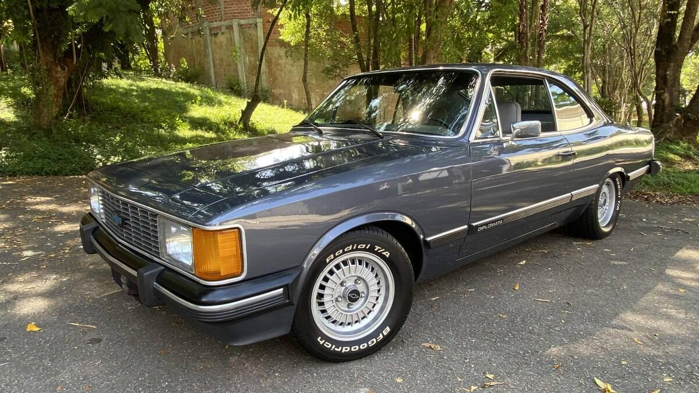

Galeria de Versões
Ao longo dos anos, o Chevrolet Opala ganhou várias versões que marcaram época e conquistaram fãs em todo o Brasil.

Opala SS
A versão esportiva lendária. Com faixas pretas no capô e laterais, motor 6 cilindros (inicialmente 4) e acabamento exclusivo. O sonho de consumo dos anos 70.

Diplomata
O topo de linha nos anos 80 e 90. Sinônimo de luxo, trazia ar-condicionado, direção hidráulica e um acabamento refinado que competia com importados.

Comodoro
O equilíbrio perfeito entre o luxo e o modelo padrão. Foi um dos modelos mais vendidos, famoso pelo teto de vinil "Las Vegas" em algumas versões.

Caravan
Lançada em 1975, a perua Opala oferecia espaço gigante para famílias e a mesma potência do sedã. Teve versões SS e Diplomata também.